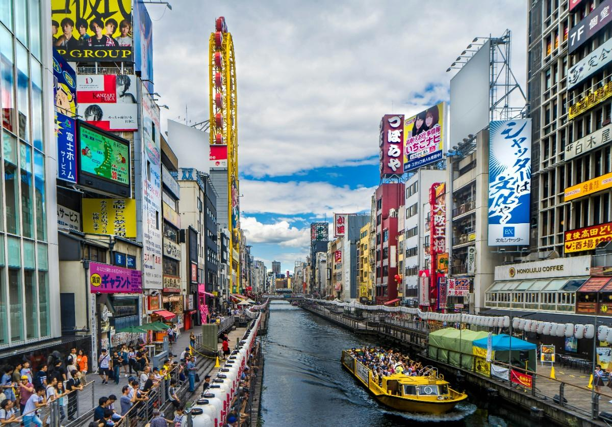
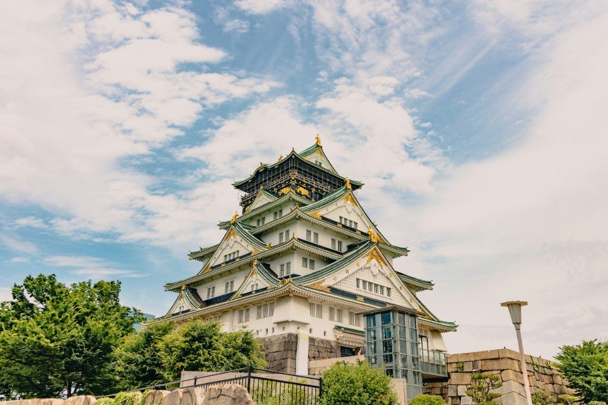
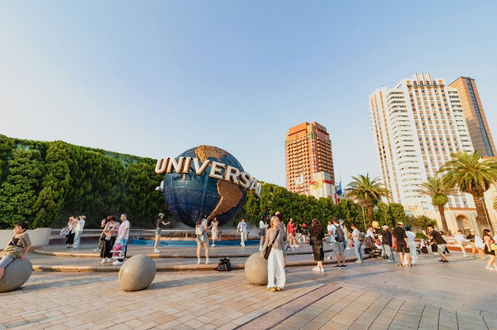

The vibrant food capital of Japan full of life and energy.
Osaka is known as the heart of Japan’s entertainment and food culture. Compared to Tokyo, it feels more relaxed and socially open, with a strong focus on street life and local experiences. The city is famous for its bright neon districts, especially Dotonbori, where signs reflect off the canal and create a lively atmosphere at night. Osaka is often described as more “human” — people are friendlier, conversations feel easier, and the energy is more casual. It’s a city built around enjoyment, whether that’s food, nightlife, or just being out with people



Lively, fun, social, energetic
Osaka is ideal for those who love food and social environments. It’s one of the best places in Japan to experience authentic street food culture and a more outgoing, fun side of Japanese life.